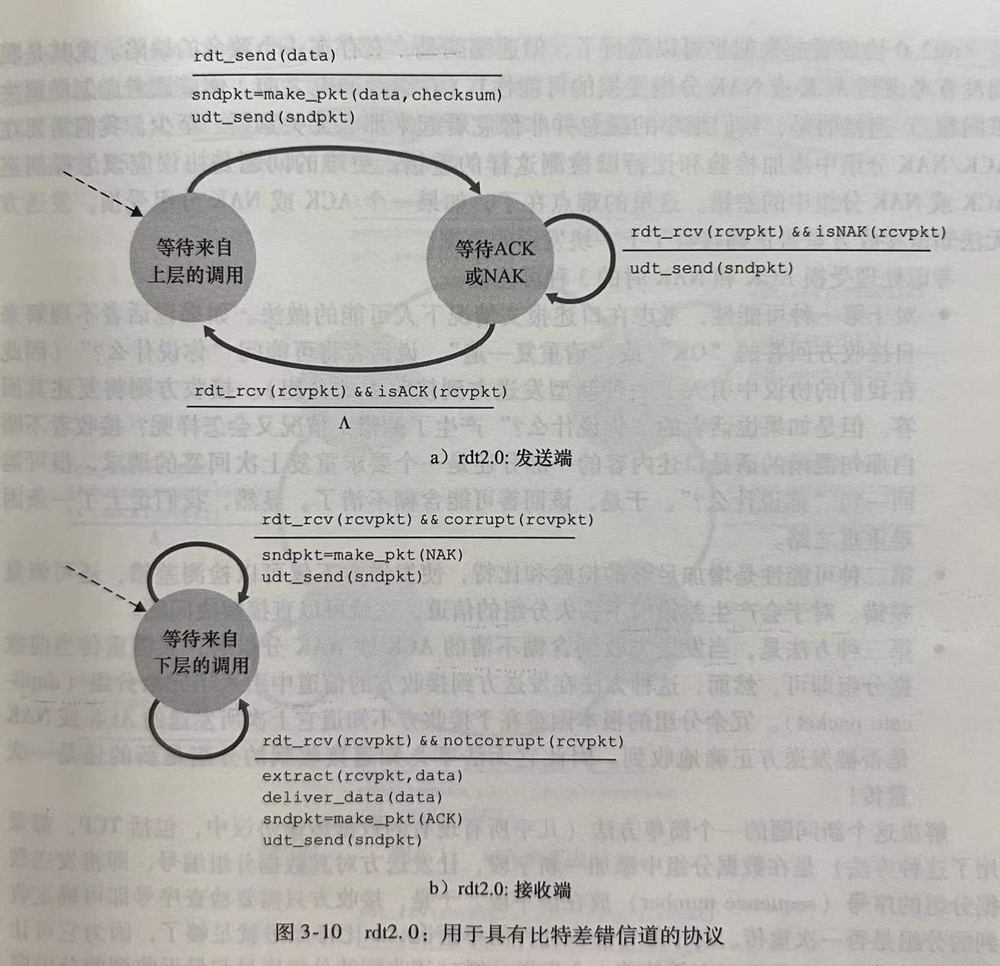

计算机网络-第3章 运输层
3.3 无连接运输：UDP
运输层最低限度必须提供一种复用/分解服务，以便在网络层与正确的应用级进程之间传递数据。
UDP只做运输协议能够做的最少工作。
UDP从应用进程得到数据，附加上用于多路复用/分解服务的源和目的端口号字段，以及两个其他的字段，然后将形成的报文段交给网络层。如果该报文段到达接收主机，UDP使用目的端口号将报文段中的数据交付给正确的应用进程。
使用UDP时，在发送报文段之前，发送方和接收方的运输层实体之间没有握手，因此UDP是无连接的。
DNS是一个通常使用UDP的应用层协议的例子。
许多应用更适合用UDP而不用TCP的原因：
- 采用UDP时，只要应用进程将数据传递给UDP，UDP就会将此数据打包进UDP报文段并立即将其传递给网络层。另一方面，TCP有拥塞控制机制，当链路变得拥挤时会遏制TCP发送方，而不管可靠交付需要多长时间。而实时应用不希望过分延迟报文段的传送，且能容忍一些数据丢失，所以使用UDP。
- 无需连接建立。TCP在开始数据传输之前要经过三次握手，而UDP不需要任何准备即可进行数据传输，因此不会引入建立连接的时延。这可能是DNS运行在UDP之上的主要原因。
- 无连接状态。TCP需要在端系统中维护连接状态。而UDP不维护连接状态，也不跟踪这些参数，因此一般能支持更多的活跃客户。
- 分组首部开销小。TCP报文段有20字节的首部开销，UDP仅有8字节的开销。
3.3.1 UDP报文段结构

应用层数据占用UDP报文段的数据字段。
UDP首部只有4个字段，每个字段由两个字节组成。
- 通过端口号可以使目的主机将应用数据交给相应进程（即分解功能）。
- 长度字段指示了在UDP报文段中的字节数（首部加数据）。
- 接收方使用检验和来检查在该报文段中是否出现了差错。
3.3.2 UDP检验和
UDP检验和提供了差错检验功能。就是说，检验和用于确定当UDP报文段从源到目的地移动时，其中的比特是否发生了改变。
发送方的UDP对报文段中的所有16比特字的和进行反码运算。得到的结果被放在报文段中的检验和字段中。
为什么UDP提供了检验和？因为不能保证源和目的之间的所有链路都提供差错检测，也许有一条链路使用没有差错检测的协议。此外，即使报文段经链路正确的传输，存储在路由器的内存中时也可能引入比特差错。因此UDP必须在端到端基础上在运输层提供差错检测。这是端到端原则的一个体现。（某种功能必须基于端到端实现）
3.4 可靠数据传输原理
可靠数据传输协议的责任：数据可以通过一条可靠的信道进行传输，传输数据比特不会受到损坏或丢失，而且所有数据都是按照发送顺序进行交付。
3.4.1 构造可靠数据传输协议
3.4.1.1 经完全可靠信道的可靠数据传输：rdt1.0
最简单的情况，即底层信道是完全可靠的。
所有分组是从发送方流向接收方。因为有完全可靠的信道，接收端不需要提供任何反馈信息给发送方，因为不用担心出现差错。
3.4.1.2 经具有比特差错信道的可靠数据传输：rdt2.0
底层信道更为实际的模型是分组中的比特可能受损的模型，这种比特差错通常出现在网络的物理部件中。
自动重传请求协议（ARQ / Automatic Repeat reQuest）：基于使用肯定确认（ACK / positive acknowledgment）和否定确认（NAK / negative acknowledgment）控制报文使接收方可以让发送方知道哪些内容被正确接收，哪些内容接收有误并因此需要重复的重传机制的可靠数据传输协议。ACK和NAK就类似于人们对话时，听懂了就说OK，没听懂就要求重复那句话。
ARQ协议中还需要另外三种协议功能来处理存在比特差错的情况：
- 差错检测。需要一种机制使接收方检测到何时出现了比特差错。
- 接收方反馈。要让发送方了解接收方情况的唯一途径就是接收方提供明确的反馈信息给发送方。
- 重传。接收方收到有差错的分组时，发送方重传该分组文。

当发送方处于等待ACK或NAK的状态时，它不能从上层获得更多数据，只有在接收到ACK并离开该状态时才能继续得到数据。因此，发送方不会发送一块新的数据，除非发送方确信接收方正确接收了当前分组，因此，rdt2.0协议被称为停等协议。
rdt2.0的致命缺陷：没有考虑ACK或NAK分组受损的可能性。
解决这个问题的一个简单方法：在数据分组中添加一个新字段，让发送方对其数据分组编号，把分组的序号放在该字段。于是，接收方只需要检查序号即可确定收到的分组是否一次重传。
rdt2.1使用了从接收方到发送方的肯定确认和否定确认。当接收到失序的分组时，接收方对所接收的分组发送一个肯定确认。如果收到受损的分组，发送一个否定确认。如果不发送NAK，而是对上次正确接收的分组发送一个ACK，也是和NAK一样的效果。因为发送方接收到对同一个分组的两个ACK（即接收冗余ACK），就知道接收方没有正确接收下一个分组。
rdt2.2是在有比特差错信道上实现的一个无NAK的可靠数据传输协议。rdt2.1和rdt2.2的细微变化在于，接收方此时必须包括一个由ACK报文所确认的分组序号，发送方此时必须检查接收到的ACK报文中被确认的分组序号。
3.4.1.3 经具有比特差错的丢包信道的可靠数据传输：rdt3.0
除了比特受损外，底层信道还会丢包。现在必须处理两个问题：怎么检测丢包以及发生丢包后应该做什么。
现在让发送方负责检测和恢复丢包工作。
假定发送方传输一个数据分组，该分组或接收方对该分组的ACK发生了丢失。这两种情况下，发送方都收不到应有的响应。发送方需要等待多久才能确定丢包了呢？
至少需要等待发送方和接收方之间的一个往返时延+接收方处理一个分组的时间。但在现实中，最大时延很难估算，而且理想的协议应该尽快从丢包中恢复。
为了实现基于时间的重传机制，需要一个倒计数定时器。在一个给定的时间量后，中断发送方。
因此发送方需要能做到：
- 每次发送一个分组时就启动一个定时器。
- 响应定时器中断。
- 终止定时器。

因为分组序号在0和1之间交替，rdt3.0有时被称为比特交替协议。
3.4.2 流水线可靠数据传输协议
rdt3.0性能问题的核心在于它是一个停等协议，导致发送方的利用率很低。解决这种问题的方法是不以停等方式运行，允许发送方发送多个分组而无须等待确认。
因为许多从发送方向接收方输送的分组可以被看成是填充到一条流水线中，故这种技术被称为流水线。
流水线技术对可靠数据传输协议带来如下影响：
- 必须增加序号范围。因为每个输送中的分组必须要有一个唯一的序号。
- 协议的发送方和接收方两端也许不得不缓存多个分组。
所需序号范围和对缓冲的要求取决于数据传输协议如何处理丢失、损坏和延时大的分组。
解决流水线的差错恢复有两种基本方法是：回退N步和选择重传。
3.4.3 回退N步
在回退N步 / Go-Back-N / GBN协议中，允许发送方发送多个分组而不需等待确认，但它也受限于在流水线中未确认的分组数不能超过某个最大允许数N。
已被发送但还未被确认的分组的序号范围可被看成是一个长度为N的窗口。随着协议的运行，窗口向前滑动。因此N被称为窗口长度，GBN协议被称为滑动窗口协议。
在GBN协议中，接收方的动作很简单。如果一个序号为n的分组被正确接收，并且按序，则接收方为分组n发送一个ACK，并将分组的数据部分交付给上层。在其他所有情况下，接收方丢弃该分组，并为最近按序接收的分组重新发送ACK。
这种方法的优点是接收缓存简单，接收方不需要缓存任何失序分组，接收方需要维护的唯一信息就是下一个按序接收的分组地序号。
3.4.4 选择重传
GBN也有性能问题，尤其是窗口长度和带宽时延积很大或流水线中有很多分组时，单个分组的差错就能引起GBN重传大量分组，流水线可能会被这些不必要重传的分组所充斥。
选择重传 / Selective Repeat / SR协议通过让发送方仅重传那些它怀疑在接收方出错的分组而避免了不必要的重传。这要求接收方逐个确认正确接收的分组。
SR接收方将确认一个正确接收的分组而不管其是否按序。
如果接收方收到了序号小于当前窗口基序号的分组，会重新确认（而不是忽略）该分组。
SR协议的发送方和接收方并不总是能看到相同的结果，即双方的窗口并不总是一致。
对SR协议而言，窗口长度必须小于或等于序号空间大小的一半。